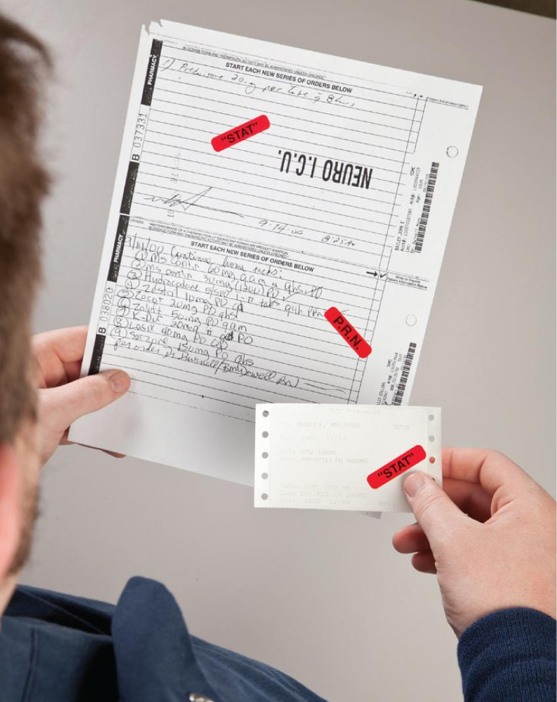
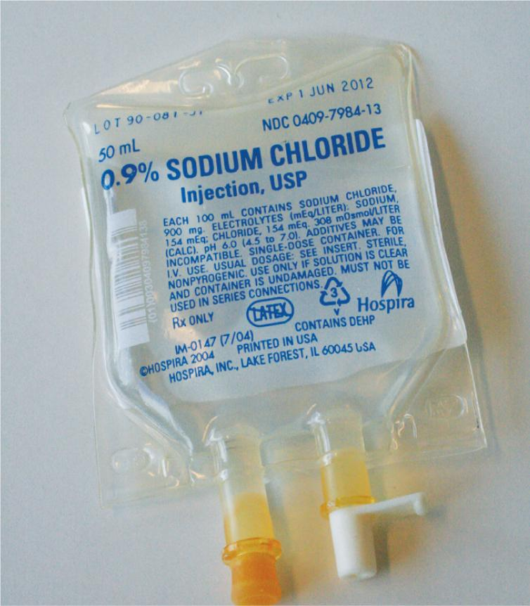
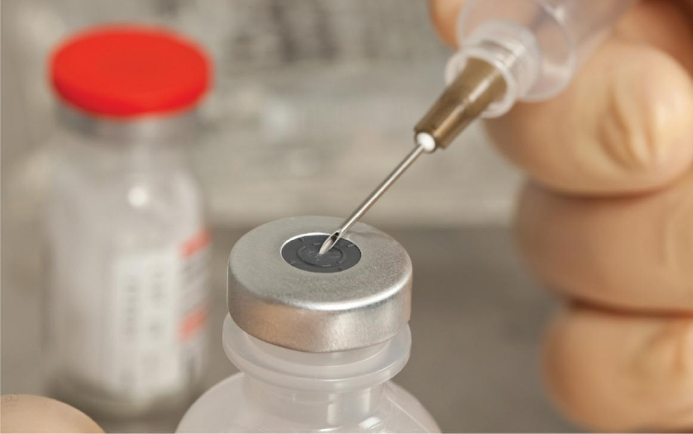

PART 2: TRAINING
13.7 Preview the Procedural Lab
Now that you, as a sterile compounding student, have a basic understanding of the critical sites of the supply items used in controlled-substance preparations, you have the opportunity to preview—and subsequently perform—the sterile compounding of a narcotic analgesic PCA syringe using aseptic technique.
First, read the Preview the Procedural Lab section. Then carefully read each step of the Procedural Lab section. Next, reinforce your understanding by watching the demonstration video. Once in the lab, your instructor will demonstrate the procedure, and then you will perform the procedure by following the steps in the Procedural Lab section. After sufficient practice, you will complete the competency assessment that will be observed by your instructor.
Note: This procedural lab requires the use of a horizontal laminar airflow workbench. For pharmacies that do not have this type of PEC, sterile compounding personnel should consult the Instruction Guide provided by the PEC’s manufacturer or their facility’s SOPs to determine which procedures may need to be adjusted to suit their PEC.
Anteroom Preparatory Procedures
For the purposes of this lab, you will prepare for the sterile compounding process in the anteroom. In practice, you may perform some of these preparatory procedures before entering the anteroom, depending on a facility’s SOPs. The ante-room provides a transition space for implementing the procedures discussed in Chapters 5–8 of this textbook, including:
- verifying the CSP label against the medication order
- performing pharmacy calculations to determine type, size, and number of supply items needed
- gathering and staging of supplies
- performing hand hygiene and garbing procedures.
Verifying the CSP Label
Compare the medication order to the controlled-substance CSP label to verify that all information on the CSP label matches the medication order exactly. Once you have verified the accuracy of the controlled-substance CSP label, you need to determine the type, size, and number of supply items needed for the procedure.

Performing Pharmacy Calculations
Using information gleaned from the controlled-substance CSP label and the narcotic analgesic vial label, calculate the desired volume. The desired volume is the volume you must withdraw from the narcotic analgesic vial to prepare the quantity ordered by the prescriber. In addition, read the CSP label to determine the amount of PF NS you need to draw up to prepare the CSP. (For additional assistance on performing calculations, refer to Chapter 7 of this textbook.)
Gathering and Staging Supplies
After performing the dosage calculations, sterile compounding personnel must properly record the removal of the narcotic analgesic vials from the controlled-substance storage area by logging the action in the perpetual inventory record. Use the procedures identified in Table 13.4 to sign out the controlled substance required to prepare the CSP.
Once all calculations are complete, place the CSP label into a small plastic bag, place the medication order into a large plastic bag, and seal both bags. Gather and wipe down all of the necessary compounding supplies with an appropriate agent before bringing them into the clean side of the anteroom. (For detailed information on the USP <797> protocol for this anteroom procedure, refer to Chapter 10.)
Donning Garb
Now that you have assembled and wiped the exterior surfaces of necessary supplies, you must don garb, a requirement for working in the buffer room. Before donning garb, ensure that you are wearing close-toed shoes and either a clean scrub uniform or other approved, lightweight, nonshedding clothing and that you have removed cosmetics, jewelry, and other items prohibited in the sterile compounding area. Then don shoe covers; a head cover and, if necessary, a facial hair cover; a face mask; and a gown. Apply an alcohol-based hand rub to all surfaces of hands and fingers and allow your hands to dry before donning sterile gloves. (Note: This procedure may also be performed in the buffer room.)
Due to time constraints, you will not perform hand-washing procedures during this procedural lab unless directed to do so by your instructor. Keep in mind that, in sterile compounding practice, handwashing is mandatory and must be performed prior to donning sterile gloves. If you are performing this procedural lab in a working buffer room, you must perform all hand hygiene and garbing procedures before entering the buffer room. (For additional assistance on the procedure for donning garb, refer to Chapter 8 of this textbook.)
Buffer Room Preparatory Procedures
When preparing narcotic analgesic CSPs for patient administration, sterile compounding personnel must diligently follow established buffer room procedures. These procedures, discussed in Chapters 8 and 9, may include:
- sanitizing hands with an alcohol-based hand rub
- donning sterile gloves
- cleaning and disinfecting the PEC.
Due to time constraints, you will not perform PEC cleaning and disinfection procedures during this procedural lab unless directed to do so by your instructor. Keep in mind that, in sterile compounding practice, PEC cleaning and disinfection procedures are mandatory and must be performed prior to beginning sterile compounding procedures and at intervals prescribed by USP <797>.
Arranging and Preparing Supplies in the PEC
Upon entering the buffer room, place the transport basket or tray onto a clean table or cart. If the transport vehicle used is a cart, wheel it so that it is positioned away from the PEC’s prefilter. If not performed previously, sanitize your hands with an alcohol-based hand rub, allow your hands to dry thoroughly, and then don sterile gloves.
Next, wipe your sterile gloves with sterile 70% IPA and allow your gloved hands to dry thoroughly. Then transfer the sterile compounding supplies into the PEC. Prior to introducing each supply item into the PEC, wipe the exterior surface of the item with sterile 70% IPA using a low-lint wiper and allow it to dry before use. When a sterile item is received in a sealed container designed to keep it sterile until opening, you do not need to wipe the exterior surface of the container. The sterile item may be removed from the container as the item is introduced into the PEC.
Place small supply items—such as the vials, needles, syringes, sterile 70% IPA swabs, and tamper-evident, sterile, adhesive seals—in the outer six-inch zone of the PEC, which is used as a staging area prior to bringing the supplies into the direct compounding area (DCA) of the PEC. Alternatively, small supply items may be placed to the left or right of the DCA.
Before placing the IVPB base solution in the DCA of the PEC, remove the IVPB bag’s dust cover. To do so, locate the tear line on the dust cover and tear open the outer packaging along this line. Remove the IVPB base solution from the dust cover and discard the cover into an appropriate waste container. Then place the IVPB bag into the DCA, or at least six inches inside the PEC. Be sure to position the injection port of the IVPB bag (in this case, a tail injection port) so that it receives uninterrupted airflow from the PEC’s HEPA filter.
Compounding Procedure for a Narcotic Analgesic PCA Syringe
With the small supply items arranged in the outer six-inch zone and the large supply items placed in the DCA of the PEC, you are ready to begin the compounding procedure for a narcotic analgesic PCA syringe. Keeping your gloved hands within the DCA, aseptically attach a capped regular needle to a 35 mL Luer-lock syringe. Open a sterile 70% IPA swab package, remove the swab, and place the swab on the DCA. Place the empty package into the start of a discard pile. Remove the needle cap and place the cap onto the IPA swab. Be sure that the open end of the cap is facing the PEC’s HEPA filter. Without drawing air into the syringe, and without regard to the direction of the needle bevel, aseptically insert the needle into the injection port of the IVPB base solution bag containing PF NS. Take care not to puncture the side wall of the injection port.

With the IVPB bag remaining on the PEC’s work surface, firmly grasp the barrel of the syringe and brace it against the PEC’s work surface. Then grasp the flat knob of the plunger with your hand and forcefully pull back on the plunger until you have drawn up slightly more than the desired volume of PF NS (in this lab, approximately 30 mL). Take care not to pull down on the plunger so forcefully that it dislodges from the syringe.
Use appropriate technique to remove bubbles and excess fluid from the syringe and then verify the correct volume within the syringe. (For additional assistance on bubble removal from a syringe, see Chapter 10 of this textbook.) Carefully recap the needle of the syringe filled with PF NS and place the needle-and-syringe unit onto the PEC’s work surface next to the partially empty IVPB bag.
Bring the PF morphine vial into the DCA. Remove the plastic flip-top cap of the vial and place the cap into the discard pile. Open a new, sterile 70% IPA package, remove the swab, and wipe the vial stopper with the swab. Then discard the empty package and the swab into the discard pile.
Open a new, sterile 70% IPA swab package, remove the IPA swab, and place the swab on the PEC’s work surface, within the DCA. Assemble a 3 mL Luer-lock syringe and capped regular needle in such a way as to avoid touch contamination and shadowing of the syringe tip and the needle hub. Remove the needle cap and place it on the new, sterile 70% IPA swab on the PEC’s work surface. The open end of the cap should be pointed toward the HEPA filter. Use aseptic technique to insert the needle into the PF morphine vial, and then perform the milking technique to withdraw the desired volume from the vial into the syringe.

Recap the needle and place the filled-and-capped narcotic analgesic syringe next to the PF morphine vial on the PEC’s work surface within the DCA, immediately adjacent to the PF NS syringe and partially empty IVPB bag. Await a verification check by your instructor or a pharmacist.
After the verification check, wipe your gloves with sterile 70% IPA and allow your gloved hands to dry. Then aseptically remove the capped regular needle from the narcotic analgesic syringe and carefully attach one end of a sterile Luer-to-Luer connector to the tip of the filled narcotic analgesic syringe. Discard the capped needle into the sharps container. Wipe sterile gloves with sterile 70% IPA and allow to dry thoroughly. Then remove the capped regular needle from the PF NS syringe and aseptically attach the filled PF NS syringe to the other end of the sterile Luer-to-Luer connector. Discard the capped needle into the sharps container.
Wipe sterile gloves with sterile 70% IPA and allow to dry thoroughly. Next, push down on the flat knob of the plunger of the syringe containing the narcotic analgesic while simultaneously pulling down on the flat knob of the plunger of the PF NS syringe. This action transfers the narcotic analgesic into the PF NS syringe.
Once the narcotic analgesic has been completely transferred, gently mix and then remove any air bubbles in the syringe. Then detach the filled PCA syringe (now containing both PF NS and the narcotic analgesic) from the Luer-to-Luer connector. Aseptically attach a sterile syringe cap to the tip of the PCA syringe.
Finally, discard the empty narcotic analgesic syringe with attached Luer-to-Luer connector into the sharps container. Wipe sterile gloves with sterile 70% IPA and allow to dry thoroughly. Then label the compounded PCA syringe and place a tamper-evident, sterile, adhesive seal over the syringe cap, extending it from one side of the syringe barrel and over the syringe cap before attaching the seal to the other side of the syringe barrel.
Upon completion of the PCA syringe compounding procedure, discard used vials and supply items in the appropriate waste containers. If there is any remaining fluid in the morphine vial, consult with your instructor or a pharmacist as to the proper procedure for disposing the controlled-substance waste. In the practice setting, you must ask a pharmacist or another appropriate controlled-substance waste witness, such as a narcotic technician, to observe your controlled-substance disposal. Typically, the designated witness records this narcotic disposal in the perpetual inventory record. Sterile compounding personnel should refer to their facility’s SOPs for the specific procedures for controlled-substance waste disposal.
Next, place the labeled PCA syringe and any unused supply items into the transport vehicle, and return these items to the anteroom. Once in the anteroom, record the beyond-use date (BUD) and your initials on the CSP label. Remove your garb in the order and manner described in Chapter 8 of this textbook.